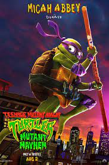

RESUMEN
- Titulo: Oppenheimer
- Rating: 4,25 estrellas
- Estreno: 20 de julio de 2023
- Duracion: 3 horas
- Sinopsis: El físico J Robert Oppenheimer trabaja con un equipo de científicos durante el Proyecto Manhattan, que condujo al desarrollo de la bomba atómica.
- Genero: Drama/Suspenso
AGREGAR A FAVORITOS
RESUMEN
- Titulo: Megalodon 2: El gran abismo
- Rating: 3,2 estrellas
- Estreno: 3 de agosto de 2023
- Duracion: 1h 56m
- Sinopsis: Jonas Taylor lidera un equipo de investigación en las profundidades del océano. Acorralados por colosales tiburones prehistóricos y despiadados bandidos, los científicos intentan sobrevivir a toda costa.
- Genero: Accion/Aventura
AGREGAR A FAVORITOS

RESUMEN
- Titulo: Tortugas Ninjas: Caos mutante
- Rating: 3,7 estrellas
- Estreno: 17 de agosto de 2023
- Duracion: 1h 37m
- Sinopsis: Tras años de estar alejados del mundo humano, los hermanos tortugas se esfuerzan por conquistar a los neoyorquinos y ser aceptados como adolescentes normales a través de actos heroicos. Su nueva amiga, April O’Neil, los ayuda a luchar contra un misterioso sindicato criminal pero pronto serán sorprendidos por un ejército de mutantes que va tras ellos.
- Genero: Comedia/Aventura
AGREGAR A FAVORITOS

RESUMEN
- Titulo: Barbie
- Rating: 4 estrellas
- Estreno: 20 de julio de 2023
- Duracion: 1h 54m
- Sinopsis: Después de ser expulsada de Barbieland por no ser una muñeca de aspecto perfecto, Barbie parte hacia el mundo humano para encontrar la verdadera felicidad.
- Genero: Comedia/Fantasia
AGREGAR A FAVORITOS